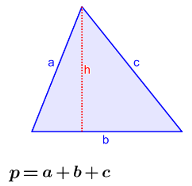

<form>
  <ion-card>
    <ion-card-header>
      <ion-card-title>Triángulo</ion-card-title>
      <ion-card-subtitle>Perimetro</ion-card-subtitle>
    </ion-card-header>
    <ion-card-content>
      El perimetro de un triángulo es la suma de las longitudes de sus tres lados. En otras palabras, es la medida total del controno o borde del triángulo.
    </ion-card-content>
    
  </ion-card>
  
        <ion-input 
        [(ngModel)]="ladoAStr"
        name="ladoAStr"
        type="number" 
        label="Lado A (cm)" 
        label-placement="floating" 
        fill="solid" 
        placeholder="ingresar valor"/>

        <ion-input 
        [(ngModel)]="ladoBStr"
        name="ladoBStr"
        type="number" 
        label="Lado B (cm)" 
        label-placement="floating" 
        fill="solid" 
        placeholder="ingresar valor"/>

        <ion-input 
        [(ngModel)]="ladoCStr"
        name="ladoBStr"
        type="number" 
        label="Lado B (cm)" 
        label-placement="floating" 
        fill="solid" 
        placeholder="ingresar valor"/>
        <br>
        
    <ion-button (click)="calcularPerimetro()">CALCULAR EL PERIMETRO</ion-button>
    <br>
    <br>
    {{resultado}} 
</form>